Inteligência Ambiental
Preparado para transformar a maneira como lidamos com os desafios ambientais!
Monitoramento em tempo real com IA avançada. O futuro da sustentabilidade começa aqui.

Inteligência Ambiental
Monitoramento em tempo real com IA avançada. O futuro da sustentabilidade começa aqui.

O monitoramento enfrenta dificuldades devido ao processamento de um grande volume de dados.

A demora na identificação de áreas críticas impede a ação rápida e localizada.

Isso reduz a velocidade de resposta, impactando a detecção e combate a queimadas e desmatamentos.
O ForestEye é uma infraestrutura de processamento inovadora que adapta tecnologias avançadas de gerenciamento térmico, desenvolvidas pela indústria espacial, para datacenters terrestres. Inspirado nas soluções criadas para controlar a temperatura de equipamentos em ambientes extremos do espaço, o ForestEye Core reduz significativamente o consumo energético e aumenta a eficiência operacional de centros de dados, especialmente aqueles dedicados ao processamento de informações espaciais e ambientais.
Utilizar imagens de satélites e inteligência artificial para criar um mapa dinâmico e atualizado de risco de desmatamento em diferentes regiões.
Identificar padrões e fatores que precedem o desmatamento (seca, temperatura, queimadas, proximidade de áreas degradadas etc.) antes que eles aconteçam.
Fornecer informações estratégicas para que órgãos ambientais, governos e instituições possam direcionar equipes de fiscalização e recursos para as áreas de maior risco, de forma mais eficiente.
Reduzir desperdícios ao priorizar áreas críticas, diminuindo o tempo de resposta e aumentando a efetividade das operações de proteção ambiental.
Contribuir para a redução significativa do desmatamento e da perda de biodiversidade por meio de inteligência preditiva.
Oferecer uma plataforma intuitiva e interativa que permita o monitoramento contínuo, análise histórica e visualização clara de alertas ambientais.
O ForestEye foi desenvolvido especialmente para órgãos ambientais, governos estaduais e federais, institutos de fiscalização, ONGs ambientais e empresas de gestão florestal que precisam atuar de forma mais inteligente e preventiva na proteção das florestas.
Se você toma decisões sobre onde e quando alocar equipes de fiscalização, drones, ou recursos de campo, o ForestEye foi feito para você.
Todas as manhãs, a equipe técnica abre o painel do ForestEye e visualiza um mapa atualizado com as áreas classificadas por nível de risco (Baixo, Médio e Alto).
Deixe sua mensagem para receber atualizações do ForestEye ou tirar dúvidas.
Equipe TechBuilders